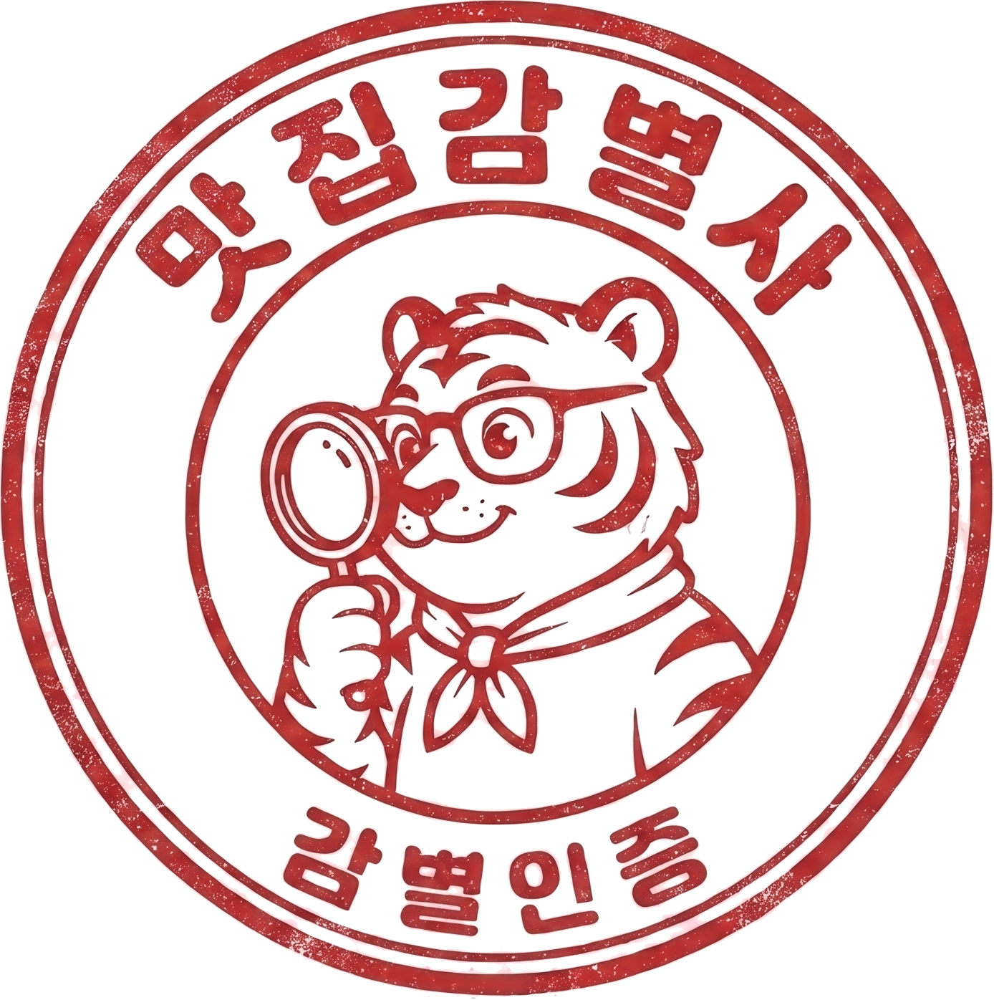
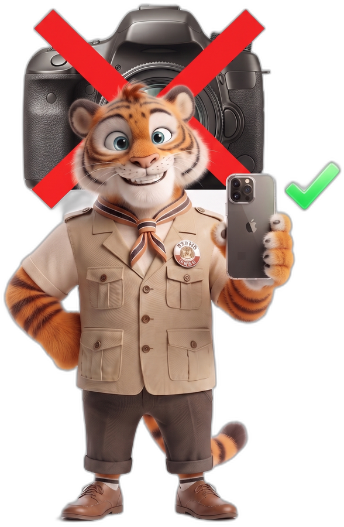

오늘도 폰 하나 들고 나갔습니다
이렇게 찍고 편집까지 끝내면
밥은 공짜, 이 봉투까지 받습니다
오늘부터, 당신도 시작할 수 있어요

맛집감별사
오늘도 폰 하나 들고 나갔습니다
이렇게 찍고 편집까지 끝내면
밥은 공짜, 이 봉투까지 받습니다
오늘부터, 당신도 시작할 수 있어요

폰 하나면 다 됩니다.
어려운 장비도, 복잡한 편집도 필요 없어요.
저도 그렇게 시작했어요.
점심시간 없이 연속 진행 — 오전 이론·기획부터 저녁 실전 매장 촬영·업로드까지 하루에 끝냅니다.
내 채널 컨셉을 잡고, AI로 캐릭터·프로필까지 완성
클로드로 매장 카테고리를 분석해 대본·콘티까지 완성
스마트폰만으로 맛있어 보이는 구도·조명 잡는 법 실습
캡컷으로 후킹 강한 숏폼 편집을 그 자리에서 완성
해시태그·제목·업로드 타이밍까지 조회수 잘 나오는 공식 전수
그날 배운 걸 실전에 바로 적용, 콘텐츠 하나 완성해서 귀가
하루가 끝나면, 첫 영상을 시작으로 수익화 계정의 주인이 됩니다
맛집감별사 대표
외식업 12년, 4개 브랜드 전국 30호점 이상을 직접 열었어요. 이론이 아니라 직접 부딪혀 만든 노하우를 그대로 전달합니다.
주요 이력
시장은 이미 충분히 크고, 맛집 전문 크리에이터는 아직 적어요.
세대별 하루 평균 SNS 이용시간
자료: KISDI · 단위 분 / 국내 SNS 이용률 71.2% · 인스타그램 78.8%
남은 자리 6석 · 상태 모집중
패션·생활용품은 경기를 타지만 식비 지출은 오히려 계속 늘고 있어요. 작년 엥겔지수가 31년 만에 최고치를 찍었을 정도로, 사람들은 여전히 "오늘 뭐 맛있는 거 먹지"를 고민해요.
맛간다 챌린지
※ 금액은 상시 변동됩니다 — 기수 종료 후 실제 활동·수익 성과가 검증되면 다음 기수부터 인상될 예정이에요. 가장 저렴하게 시작할 수 있는 지금이 적기입니다.
네, 스마트폰 하나면 충분해요. 저도 그렇게 시작했어요.
오히려 이 과정은 초보를 위해 만들었어요.
하루 완성 과정이라 딱 하루만 집중하시면 돼요. 기수 일정은 신청하시면 안내드려요.
네, 수료 즉시 맛집감별사에 신규 크리에이터로 등록되고, 매칭되면 바로 광고가 진행돼요.
아니요, 얼굴 노출 없이 운영하는 방법도 함께 알려드려요.
1회차 시작 전까지는 전액 환불 가능해요.
소수 그룹으로 함께하며 서로 피드백도 나눠요.
저녁 실전 매장 실습(18:00~20:00)은 미리 섭외된 매장에서 진행하니 걱정 안 하셔도 돼요.
네, 1개월간 단톡방 피드백이 포함되어 있어요.